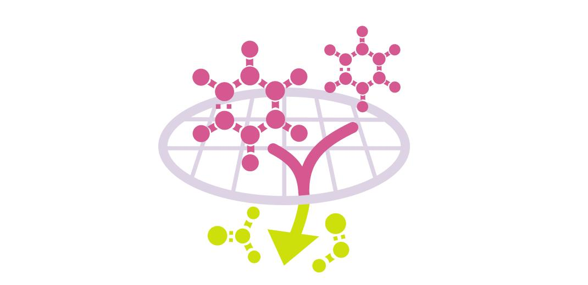

Hit Picking Handbook is the main panel of the Syto bundle. It analyses one docked pose at a time in its binding site: it finds and scores the non-covalent interactions, flags clashes, strained torsions and stranded hydrogen-bond donors, and shows citation-backed reference values for whatever atom you click. It is meant to be used next to ViewDock. See also: Hit Picking Learn, hitpick
The scores are heuristic ranking aids measured against published geometric criteria. They are not free energies and are never summed into one number.
Open the receptor and the docked poses, then prepare the site once:
open receptor.pdb
open poses.mol2 (ViewDock opens)
hitpick setup
hitpick analyze
Open the panel from the menu Tools → Binding Analysis → Hit Picking Handbook. While ViewDock is running, each pose is analysed as you step through its table, so hitpick analyze is only needed by hand without ViewDock. The ligand and the receptor should carry explicit hydrogens.
The top of the panel lists every interaction found for the displayed pose. Each row gives the interaction type and its colour in the 3D view, the two partners, a quality bar (0–1, how well the geometry fits the literature criteria), the measured distance and angles, and a note where something is off, for example “D-H···A 128°, well off linear”. Click a row to highlight its atoms.
In the graphics window interactions are dashed lines, one colour per type: hydrogen bonds, charged hydrogen bonds, salt bridges, π-stacking (parallel and T-shaped), cation–π and halogen bonds. Weak C–H hydrogen bonds and hydrophobic contacts are available but off by default. Clashes are red, severe clashes dark red, and clashes within the ligand orange.
Warning cards appear under the list when there is something to check:
Interactions shown has one checkbox per interaction type. Display holds the rest: distance and angle labels, the literature limits in the labels, clashes, the two stranded-atom settings, the line width, and the basicity plot. Every control has a hitpick command equivalent, listed on the command page.
When docked at the side the panel is one column. Detach it with hitpick panel and widen it to get two or three columns.
Ctrl-click a single atom (any way of selecting exactly one atom works). The panel shows the atom's chemical role, highlights the whole group it belongs to, and lists the handbook entries for that group: geometric criteria, energy estimates and, for acceptors and bases, where the group sits on the pKBHX (hydrogen-bond basicity) and pKBH+ (conjugate acid pKa) scales. Every value names the paper and table it came from, with a link.
The scale values are for the unsubstituted parent compound, with the family range shown; substituents can move them by a log unit or more. The two scales are not interchangeable: a strong hydrogen-bond acceptor is not necessarily a strong base.
Turn the behaviour off with hitpick autoexplain false. To use a dedicated mouse button instead:
mousemode right "hit picking handbook"
Hovering also works: an atom gives its role and basicity, an interaction line gives its measured terms against the limits, a clash gives its overlap, and a rotatable bond gives its torsion angle (hitpick hover false restores the standard balloon).
Torsions worth a look lists the flagged rotatable bonds, worst first. The judgement compares the measured dihedral with quantum-mechanical torsion scans of the same bond class (OpenFF torsion drives, B3LYP-D3(BJ)/DZVP). A torsion is noted at 1.5 kcal/mol above that class's own minimum and shown in orange at 3 kcal/mol. Click a row to select the bond and plot its energy profile, with the pose's angle marked, under the list. Bond classes with no scan data get no judgement.
Five columns are added to the ViewDock table:
| Column | Meaning |
|---|---|
| HP H-Bonds | number of hydrogen bonds |
| HP Salt | number of salt bridges |
| HP Stack | number of π-stacking interactions |
| HP Good | interactions comfortably inside their literature limits (quality ≥ 0.55) |
| HP Clash | worst overlap, in Å |
Sort on HP Good, but read it next to HP Clash.